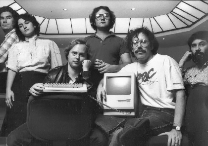

Chương 10

hi Andy Hertzfeld tham gia vào nhóm Macintosh, ông đã nghe Bud Tribble, một nhà thiết kế phần mềm khác, trình bày về khối lượng công việc khổng lò cần phải xử lý. Jobs muốn công việc phải được hoàn thành vào tháng Một năm 1982, sớm hơn kế hoạch một năm. “Thật điên rồ,” Hertzfeld nói. “Không thể nào làm được!” Tribble nói rằng Jobs nên chấp nhận thực tế. “Cách chính xác nhất có thể mô tả lại tình hình là một cụm từ được sử dụng trong bộ phim nổi tiếng Star Trek,” Tribble giải thích. “Steve có khả năng bóp méo phạm vi thực tại.” Khi Hertzfeld nhìn có vẻ bối rối, Tribble đã giải thích lại. “Trong tư tưởng của Jobs, thực tế là điều có thể dễ dàng bóp méo.

Đội ngũ Mac ban đầu năm 1984: George Crow, Joanna Hoffman, Burrell Smith, Andy Hertzfeld, Bill Atkinson, and Jerry Manock
ông ấy có thể thuyết phục bất kỳ ai về bất kỳ điều gì. Nó sẽ giảm dần tác dụng khi Jobs không ở đó, và khiến chúng ta khó có được một tiến độ làm việc thực tế”.
Tribble nhớ lại rằng mình đã áp dụng một cụm từ từ tập “Menagerie” của bộ phim star Trek, “ở đó những người ngoài hành tinh tạo ra một thế giới mới riêng của họ thông qua sức mạnh tinh thần tuyệt đối.” ông muốn nói rằng cụm từ đó vừa có nghĩa là một lời khen mà cũng có nghĩa là một lời quở trách: “Nó khá nguy hiểm khi bạn bị lôi vào „phạm vi bóp méo‟ của Steve, nhưng đây cũng chính là những gì khiến ông ấy có khả năng thay đổi được thực tế.” Đầu tiên, Hertzefeld nghĩ rằng Tribble đang phóng đại, nhưng sau hai tuần làm việc cùng Jobs, ông trở thành một người quan sát tỉ mỉ về sự việc này. “Khả năng bóp méo phạm vi thực tại là một sự pha trộn gây nhiễu giữa phong cách hùng biện, ý chí thuyết phục và sự mong muốn bẻ cong mọi thực tại để có thể phù hợp với mục đích trong tầm tay,” ông nói.
Hertzefeld phát hiện ra rằng có một vài mẹo nhỏ có thể giúp bạn tránh được sự ảnh hưởng của nó. “Thật ngạc nhiên là khả năng này lại dường như có tác dụng ngay cả khi bạn nhận thức được nó. Chúng tôi thường bàn luận xem cơ sở của hiện tượng này, tuy nhiên sau một thời gian, hầu hết chúng tôi đều bỏ cuộc và chấp nhận nó như một thế lực tự nhiên.” Sau khi Jobs quyết định thay soda trong tủ lạnh của văn phòng bằng Odwalla cam và cà rốt, một vài người trong đội đã làm áo phông có in dòng chữ “Reality Distortion Field” (Khả năng bóp méo Phạm vi Thực tế) ở đằng trước và đằng sau là “It‟s in the juice” (Nó có ở trong nước hoa quả!).
Đối với một số người, họ cho rằng cụm từ đó chỉ là một cách thông minh để nói rằng Jobs định nói dối. Nhưng trong thực tế, nó là một dạng phức tạp hơn của hành vi che giấu. Ông có thể khẳng định một điều gì đó - một thực tế trong lịch sử thế giới hoặc tường thuật lại ý tưởng của một người nào đó trong buổi họp - mà không cần cân nhắc lại xem nó có chính xác hay không. Hành vi này xuất phát từ việc cố tình bất chấp thực tế, không chỉ đối với người khác mà còn với chính bản thân ông. “Jobs thậm chí có thể đánh lừa chính mình,” Bill Atkinson nói. “Khả năng này cho phép ông đánh lừa tất cả mọi người và khiến cho mọi người tin vào quan điểm của ông, vì chính ông đã trực tiếp trải qua và tiếp thu nó.”
Tất nhiên là cũng có rất nhiều người xuyên tạc thực tế. Khi Jobs làm vậy, nó thường là một sách lược để biến mọi thứ trở nên hoàn hảo. Wozniak, một người mà sự trung thực cũng nhiều như sự khôn khéo của Jobs, đã hoàn toàn ngạc nhiên về hiệu quả của hành vi này đem lại. “Khả năng bóp méo thực tại của Jobs được thể hiện khi ông nghĩ đến một kế hoạch thiếu hợp lý trong tương lai, như việc ông nói với tôi rằng tôi có thể thiết kế trò chơi Breakout chỉ trong vài ngày. Bạn nhận ra rằng đó là một điều bất khả thi, nhưng bằng cách nào đó ông ấy đã biến nó thành điều có thể.” Khi những thành viên của nhóm làm việc Mac đều bị mắc bẫy của Jobs, họ đều gần như bị thôi miên, “ông ấy làm tôi nhớ đến Rasputin” (23), Debi Coleman nói. “ông ấy sẽ nhìn chằm chằm vào bạn và không hề chớp mắt. Điều này sẽ không xảy ra nếu ông ấy đang uống nước Kool-Aid nho.” Nhưng giống như Wozniak, bà tin rằng khả năng bóp méo phạm vi thực tại đó cho phép Jobs thôi thúc mọi người trong đội thay đổi quá trình lịch sử chỉ bằng nguồn tài nguyên nhỏ của Xerox hay IBM. “Nó là sự tự bóp méo của chính bản thân,” bà ấy nói. “Bạn có thể làm những điều tưởng chừng như không thể, bởi vì bạn không hề nhận ra điều đó.”
Gốc rễ của hành vi bóp méo thực tại này chính là Jobs tin rằng nó sẽ không áp dụng lại vào ông. ông đã có một số bằng chứng để chứng minh điều này: hồi còn nhỏ, ông thường có thể bóp méo sự thật với những mong muốn của mình. Sự nổi loạn và tính ương ngạnh đã ăn sâu vào tính cách của Jobs. Ông luôn cho rằng mình là một người đặc biệt, một người sáng dạ. “ông ấy nghĩ có rất ít người đặc biệt, đó là những người như Einstein, Gandhi và các bậc thầy mà ông gặp ở Ấn Độ, và ông là một trong số họ,” Hertzfeld nói. “ông đã nói với Chrisann như vậy. Một lần, Jobs thậm chí còn nói bóng gió với tôi rằng ông ấy đã được khải thị. Nó gần giống như Nietzsche.” Jobs không bao giờ học tập Nietzsche nhưng quan điểm triết gia về việc sẵn sàng lên nắm quyền và bản năng đặc biệt của một Uberman đã đến với ông một cách tự nhiên. Như Nietzshe đã viết trong Thus Spoke Zarathustra, “Tinh thần sẽ thôi thúc ý chí của ông, và ông - người đã bị thế giới lãng quên sẽ thống trị thế giới.” Nếu thực tại không thỏa mãn được mong muốn của ông, ông có thể bỏ qua nó, như những gì ông đã làm với sự ra đời của con gái mình và những gì ông đã làm vài năm sau đó, khi lần đầu được chẩn đoán mắc căn bệnh ung thư. Thậm chí với những sự nổi loạn nhỏ hàng ngày như không lắp biển số xe và đậu xe ở chỗ dành cho người khuyết tật, ông đã hành động như thể ông không hề gò bó cuộc sống xung quanh mình.
Một chìa khóa khác cho tầm nhìn xa trông rộng của Jobs chính là khả năng phân loại mọi thứ. Mọi người hoặc là “sáng dạ” hoặc là “ngu dốt”. Công việc của họ có thể là “tốt nhất” hoặc là “hoàn toàn vứt đi”. Bill Atkinson - nhà thiết kế của Mac - người được xếp vào nhóm tốt trong hai nhóm trên mô tả:
Làm việc dưới quyền của Jobs thực sự rất khó bởi vì có một sự khác biệt hoàn toàn giữa thần thánh và kẻ ngu dốt. Nếu bạn được coi là một vị thánh, bạn sẽ được sùng bái và không được làm sai bất kỳ điều gì. Vài người trong số chúng tôi được cho là những thiên tài, như tôi chẳng hạn, đều biết rằng chúng tôi thực sự thường không đưa ra được những quyết định tốt về mặt kỹ thuật, vì thế chúng tôi luôn lo sợ rằng mình sẽ không còn được sùng bái vào một lúc nào đó. Còn những người bị cho là ngu dốt, những kỹ sư thông minh làm việc chăm chỉ, thì lại cảm thấy họ không bao giờ được đánh giá cao và nâng cao được địa vị của mình.
Nhưng những nhóm này không thay đổi ngay cả khi Jobs có thể nhanh chóng thay đổi bản thân. Khi trao đổi với Hertzfeld về khả năng bóp méo phạm vi thực tại này, Tribble đã đặc biệt cảnh báo ông về khuynh hướng của Jobs giống như dòng điện cao áp xoay chiều. “Việc ông ấy nói với bạn một điều gì đó là rất tòi tệ hay tuyệt vời, thì không có nghĩa là ông ấy có thể thấy như thế vào ngày mai,” Tribble giải thích. “Nếu bạn nói với Jobs về một ý tưởng mới, ông ấy sẽ nói với bạn rằng ông ấy nghĩ nó thật là ngu ngốc. Nhưng sau đó, nếu thực sự thích nó, chính xác là một tuần sau đó, ông ấy sẽ quay trở lại và sẽ đề xuất ý tưởng với bạn, nếu như ông ấy suy nghĩ về nó.” Sự táo bạo trong kỹ thuật xoay chuyển tình thế đã làm Diaghilev choáng váng. “Nếu một lập luận của ông không mang tính thuyết phục, ông sẽ chuyển nó sang cho người khác một cách khéo léo,” Hertzfeld nói. “Đôi lúc, ông ấy sẽ khiến bạn bị mất thăng bằng bằng cách bất ngờ chiếm lấy ý tưởng của bạn và coi nó như là của riêng mình mà không hề biểu hiện rằng ông đã từng nghĩ khác về nó.” Chuyện này lặp đi lặp lại nhiều lần đối với Bruce Horn, nhà lập trình và cũng là người cùng với Tesler bị lôi kéo từ Xerox PARC. “Tuần đầu, tôi sẽ nói với ông ấy về ý tưởng của mình, sau đó ông ấy sẽ nói rằng nó thật điên rồ,” Horn nhớ lại. “Tuần tiếp theo, ông ấy sẽ đến và nói, „Này, tôi có một ý tưởng tuyệt vời‟ - và đó chính là ý tưởng của tôi! Bạn nên nói với ông ấy rằng:
„Steve, tôi đã nói với ông về nó cách đây một tuần,‟ và ông sẽ nói: „ồ, ò đúng rồi, cậu hãy thực hiện nó đi‟.”
Việc này như thể là bộ não của Jobs thiếu một dây thần kinh nào đó có thể điều chỉnh những ý tưởng điên rồ nảy ra trong đầu ông. Vì vậy, để đối phó với ông, nhóm thực hiện Mac đã áp dụng một khái niệm âm thanh được gọi là “bộ lọc thông thấp” (low pass filter). Trong quá trình xử lý thông tin mà ông truyền đạt, họ đã học được cách làm giảm biên độ tần số của tín hiệu ông truyền đến. Điều này sẽ làm ổn định các dữ liệu và cung cấp một lượng ít hơn những chuyển động kích thích của quá trình phát triển hành vi của ông. Theo lời Hertzfeld thì, “Sau một vài chu kỳ xen kẽ thái độ cực đoan của ông, chúng tôi có thể biết cách làm thế nào để giảm tác động của các tín hiệu từ ông và không còn phản ứng thái quá nữa.”
Vậy có phải những hành vi không chọn lọc của Jobs xảy ra là do ông ấy thiếu nhạy cảm?
Không. Sự thật lại gần như trái ngươc hoàn toàn. Jobs rất tinh tế, ông có thể đọc được suy nghĩ của mỗi người và nắm được điểm mạnh và điểm yếu của họ. ông có thể gây choáng cho một nạn nhân mà ông không chủ động nhắm tới. ông có thể biết được ai đang giả vờ hoặc ai là người thực sự biết về một điều gì đó qua trực giác của mình. Điều này biến ông trở thành một bậc thầy tâng bốc, vuốt ve, thuyết phục và khiến mọi người kinh sợ. “ông ấy có một khả năng kỳ lạ là biết chính xác được điểm yếu của bạn, biết được điều gì khiến bạn trở nên bé nhỏ, khúm núm,” Joanna Hoffman nói.
“Nó là một đặc điểm phổ biến ở những người có sức lôi cuốn và biết cách thao túng người khác.
Việc bạn biết được rằng ông có thể đè bẹp bạn sẽ khiến bạn trở nên yếu đuối và sẵn sàng chấp thuận ý kiến của ông, ròi sau đó ông có thể nâng bạn lên, đặt bạn vào một chiếc bệ và làm chủ bạn.” Ann Bowers đã trở thành một chuyên gia đối phó với một người cầu toàn, hay giận giữ và thường xuyên gây rắc rối là Jobs. Bà đã từng là giám đốc nhân sự tại Intel, nhưng đã phải nhường chỗ sau khi kết hôn với người đồng sáng lập của công ty là Bob Noyce. Bà đã gia nhập Apple vào năm 1980 và được coi như là một người mẹ dịu dàng, sẽ đến giải quyết mọi chuyện sau mỗi cơn thịnh nộ của Jobs. Bà bước vào văn phòng, đóng cửa lại và nhẹ nhàng khuyên bảo Jobs. “Tôi biết, tôi biết mà,” ông nói. “Vậy thì hãy dừng việc này lại,” bà nhấn mạnh. Bowers nhớ lại, “Ông ấy sẽ trở nên tốt trong một thời gian, nhưng một hoặc vài tuần sau đó, tôi sẽ lại được gọi đến.” Bà nhận ra rằng Jobs rất khó có thể kiềm chế bản thân, “ông ấy có những kỳ vọng rất lớn, và nếu mọi người không thể hoàn thành nó như ông mong muốn, thì ông sẽ không thể chấp nhận được. Steve cũng không thể điều khiển được bản thân. Tôi có thể hiểu được vì sao Steve lại buồn, thường thì ông ấy đúng, nhưng nó sẽ làm ông bị tổn thương. Nó tạo ra một nỗi sợ hãi. ông ấy có thể tự nhận thức được nhưng không phải lúc nào cũng có thể điều chỉnh được hành vi của mình.” Jobs đã trở nên gần gũi với Bowers và chòng của bà, và ông có thể đến nhà họ ở Los Gatos Hill mà không cần báo trước. Bà sẽ nghe thấy tiếng động cơ xe của Jobs từ xa và nói: “Tôi đoán là hôm nay Steve sẽ lại dùng bữa tối cùng chúng ta.” Trong một thời gian dài, bà và Noyce như gia đình thứ hai của Jobs. “Steve rất thông minh nhưng cũng là một người thiếu thốn, ông ấy cần phải trưởng thành, Bob đã trở thành một người cha, và tôi thì lại giống một người mẹ của ông ấy.” Cũng có một số mặt tích cực bên cạnh việc Jobs luôn đòi hỏi và làm tổn thương người khác. Những người không bị “vỡ vụn” trước những lời của Jobs sau đó sẽ trở nên mạnh mẽ hơn.
Họ làm tốt công việc của mình hơn, và có thể vượt qua cả nỗi sợ hãi và mong muốn làm hài lòng ông. “Hành vi của ông có thể làm giảm hết hứng thú làm việc của bạn, nhưng nếu bạn có thể vượt qua được, thì nó thực sự hiệu quả,” Hoffman nói. Đôi lúc bạn cũng có thể đáp trả, và bạn không chỉ tồn tại được mà còn phát triển mạnh mẽ. Nhưng việc này không phải lúc nào cũng hiệu quả; Raskin đã cố thử, ông đã thành công trong chốc lát nhưng sau đó lại bị vùi dập. Nhưng nếu bạn thực sự bình tĩnh và tự tin, nếu Jobs đánh giá tốt về bạn và quyết định rằng bạn biết chính xác những gì mình đang làm, ông ấy sẽ tôn trọng bạn. Trong cả cuộc sống các nhân và công việc của ông những năm qua, sự quan tâm của ông có xu hướng bao gồm những người mạnh mẽ hơn là những người nịnh bợ.
Nhóm thực hiện Mac biết điều đó. Từ năm 1981, hàng năm đều có một giải thưởng dành cho người nào dám lên tiếng vì quyền lợi của mình xuất sắc nhất. Giải thưởng này phần chỉ là một trò đùa nhưng cũng một phần phản ảnh sự thật; Jobs biết về nó và ông cũng thích nó. Joanna Hoffman đã giành giải năm đầu tiên. Xuất thân từ một gia đình tỵ nạn Đông Âu, bà có một ý chí mạnh mẽ và tính cách nóng nảy. Ví dụ như, vào một ngày, bà phát hiện ra là Jobs đã thay đổi bản kế hoạch marketing của bà sang một hướng hoàn toàn phi thực tế. Quá tức giận, bà đã lao thẳng đến văn phòng của ông ấy. “Tôi vừa leo lên cầu thang vừa nói với trợ lý của ông rằng tôi sẽ đi lấy một con dao và đâm thẳng vào tim ông ấy,” bà kể lại. AI Eisenstat, cố vấn công ty, đã chạy ra ngăn bà lại. “Nhưng Steve đã nghe lời tôi và đã rút lại quyết định đó.” Hoffman lại giành chiến thắng vào năm “Tôi nhớ là mình đã rất ghen tị với Joanna, bởi vì bà ấy đã dám đứng lên phản đối Steve còn tôi thì chưa bao giờ nghĩ đến điều đó,” Debi Coleman, người đã gia nhập vào nhóm thực hiện Mac năm đó. “Sau đó, vào năm 1983, tôi đã giành giải thưởng trên. Tôi đã học được một bài học rằng bạn cần phải lên tiếng vì những gì bạn tin tưởng, đây là điều mà Steve luôn tôn trọng. Kể từ đó, tôi bắt đầu được thăng chức.” Cuối cùng, bà đã leo lên vị trí giám đốc sản xuất.
Một ngày nọ, Jobs xông vào phòng của một trong những kỹ sư của Atkinson và thốt lên một câu quen thuộc: “Thật là một đống vứt đi!” Atkinson nhớ lại, “Anh chàng đó nói: „Không, không phải thế, nó thực sự đã là tốt nhất rồi,‟ và anh ta giải thích với Jobs về cuộc trao đổi kỹ thuật mà ông đã thực hiện.” Jobs đã rút lại lời nói của mình. Atkinson đã dạy cho nhóm của mình cách biến đổi những ngôn từ của Jobs. “Chúng tôi đã học được cách diễn giải câu Thật là một đống vứt đi‟ thành một câu hỏi có nghĩa là „Nói cho tôi biết vì sao đây lại là cách làm tốt nhất‟.” Nhưng câu chuyện lại có một đoạn mấu chốt, khi Atkinson đã tìm ra được một bài học ở trong đó. Cuối cùng kỹ sư đó đã tìm ra được một cách thậm chí còn hay hơn. “Anh ta đã làm việc tốt hơn bởi vì Jobs đã thử thách anh ấy,” Atkinson nói, “điều này chỉ ra rằng bạn có thể phản đối Jobs những cũng nên lắng nghe, bởi vì thường thì ông đều đúng.”
Việc hay tức giận của ông một phần cũng do tính cầu toàn và thiếu kiên nhẫn của ông với những người đã thỏa thuận về việc có được sản phẩm đúng thời hạn và không vượt quá nguồn kinh phí cho phép, “ông ấy không giỏi thương lượng hay thỏa hiệp,” Atkinson nói. “Nếu một ai đó không quan tâm đến việc làm cho sản phẩm của họ trở nên hoàn hảo, họ chính là một kẻ ngốc.” Ví dụ, tại một cuộc triển lãm máy tính ở bờ biển phía Tây vào tháng Tư năm 1981, Adam Osborne ra mắt máy tính cá nhân xách tay. Mặc dù không được đánh giá xuất sắc, màn hình chỉ 5 inch và bộ nhớ thì lại không lớn, nhưng nó lại hoạt động khá tốt. Như một tuyên bố khá nổi tiếng của Osborne là “Chỉ cần đầy đủ là được rồi. Tất cả các yếu tố khác thì đều không cần thiết.” “Anh chàng này chả
hiểu gì cả,” Jobs nhắc đi nhắc lại trong khi lang thang ở hành lang của Apple. “Không phải anh ta đang tạo ra nghệ thuật, mà là đang tạo ra một đống thứ vứt đi!” Một ngày, Jobs vào phòng của Larry Kenyon, một kỹ sư đang làm việc với hệ điều hành Macintosh và phàn nàn rằng hệ thống này khởi động quá lâu. Kenyon bắt đầu giải thích, nhưng Jobs đã cắt ngang lời ông. “Nếu nó có thể cứu được mạng sống của một người, liệu anh có thể giảm bớt thời gian khởi động đi 10 giây được không?” ông hỏi. Kenyon nói rằng ông có thể làm được.
Jobs đến chỗ chiếc bảng trắng và chỉ ra rằng nếu có 5 triệu người sử dụng Mac, và nếu nó mất thêm 10 giây để khởi động máy hàng ngày, thì ta có thể tiết kiệm khoảng 300 nghìn giờ mỗi năm, tương đương với hàng trăm mạng sống có thể được cứu. “Larry thực sự bị ấn tượng, và sau đó vài tuần, ông đã quay trở lại với việc cải thiện thời gian khởi động nhanh hơn trước 28 giây,” Atkinson nhớ lại. “Steve đã thúc đẩy nhân viên của mình bằng cách nhìn vào một bức tranh lớn hơn.” Kết quả là nhóm thực hiện Macintosh đã đến chia sẻ niềm đam mê với Jobs bằng một sản phẩm tuyệt vời, không chỉ mang tính lợi nhuận. “Jobs nghĩ rằng ông chính là một nghệ sỹ, và ông đã khuyến khích mọi người trong nhóm thiết kế cũng nghĩ theo cách đó,” Hertzfeld nói. “Mục đích không phải là để đánh bại đối thủ cạnh tranh hay kiếm được càng nhiều tiền càng tốt, mà là tạo ra những thứ tuyệt vời nhất có thể, hay thậm chí là chỉ tuyệt vời hơn một chút cũng được.” Một lần, Jobs đưa đội làm việc của mình đến triển lãm cốc của Tiffany tại bảo tàng Metropolitan tại Manhattan do ông tin rằng họ có thể học hỏi được từ những mẫu thiết kế của Louis Tiffany không chỉ sự sáng tạo nghệ thuật tuyệt vời mà còn có thể được sản xuất hàng loạt. Bud Tribble nhớ lại, “Chúng tôi đã tự nhủ với bản thân: „Nếu muốn thực hiện điều gì đó trong cuộc sống, chúng ta cũng có thể làm cho chúng trở nên đẹp đẽ.”
1984 Macintosh System 1.0
Vậy có phải tất cả những hành vi nổi giận và lạm dụng của ông đều cần thiết? Thực chất là không. Còn có những cách khác có thể thúc đẩy được đội ngũ nhân viên của mình. Mặc dù Macintosh đã rất tuyệt vời nhưng nó vẫn bị chậm tiến độ và khá tốn kém bởi vì Jobs đã có những can thiệp bốc đồng. Nó cũng gây ra những tác dụng phụ khiến tinh thần của mọi người bị xuống dốc. “Những đóng góp của Jobs có thể được thực hiện mà không cần phải có sự đe dọa từ ông,” Wozinak nói. “Tôi muốn mọi người kiên nhẫn hơn và không cần phải có quá nhiều xung đột. Tôi nghĩ một công ty có thể trở thành một đại gia đình. Nếu kế hoạch của Macintosh được tiến hành theo cách của riêng tôi, thì mọi thứ chắc hẳn sẽ là một đống lộn xộn. Nhưng tôi nghĩ nếu kết hợp cả hai cách làm thì nó sẽ tốt hơn là chỉ tiến hành theo cách của Steve.” Nhưng cho dù phong cách của Steve có thể khiến mọi người cảm thấy mệt mỏi, nhưng ở một mặt nào đó, nó vẫn truyền cảm hứng một cách lạ lùng. Nó đã truyền vào các nhân viên của Apple niềm đam mê vững chắc để tạo ra được những sản phẩm đột phá và cho họ niềm tin rằng họ có thể tạo ra những thứ tưởng chừng như không thể. Họ có một chiếc áo phông in dòng chữ “90 hours a week and loving it!” (90 giờ 1 tuần và chúng tôi yêu nó!). Hơn cả nỗi sợ hãi với Jobs và sự thôi thúc khiến họ luôn cố gắng tạo ấn tượng với ông, họ đã vượt qua được sự kỳ vọng của chính mình. “Qua năm tháng, tôi đã học được rằng khi bạn gặp những người tốt thực sự thì bạn không cần phải cưng nựng họ,” Jobs giải thích. “Bằng cách kỳ vọng rằng họ sẽ làm được những thứ tuyệt vời, bạn sẽ có được điều đó. Nhóm nghiên cứu ban đầu của Mac đã dạy tôi rằng những người đạt điểm A+ thích làm việc với nhau, và họ không thích việc bạn chỉ đạt điểm B. Hãy hỏi bất kỳ một thành viên nào của nhóm, họ đều sẽ nói với bạn rằng nỗi đau này là xứng đáng.” Hầu hết bọn họ đều đồng ý. “Steve có thể hét lên trong một cuộc họp, „đò đần độn, cậu chẳng bao giờ làm đúng được việc gì cả‟,” Debi Coleman nhớ lại. “Việc này xảy ra gần như hàng giờ. Tuy nhiên tôi vẫn nghĩ rằng mình là người may mắn nhất thế giới khi được làm việc với ông ấy.”
Chú thích:
(23). Rasputin (1869-1916): là nhân vật lịch sử Nga tự phong cho mình là tu sỹ với thần lực của Thượng đế. Rasputin được Nga hoàng Nicolas II và Hoàng hậu Alexandra tôn sùng vì họ cho rằng ông đã chữa được bệnh loãng máu cho con trai duy nhất của mình là Hoàng tử Alexei.